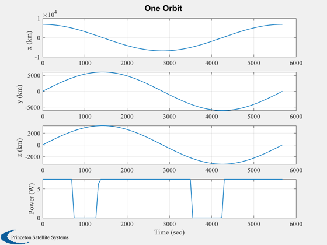
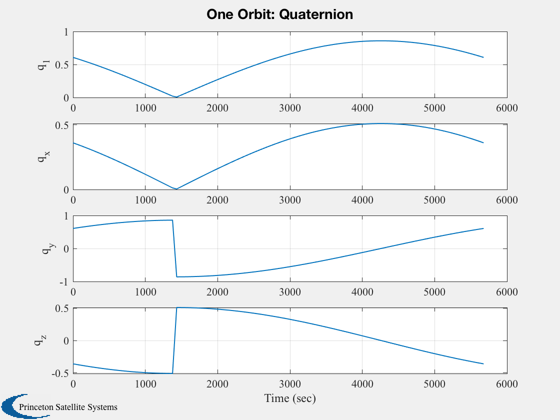

Compute the power storage requirements for a CubeSat.
Compares the requirements versus a commercial Li-Ion battery http://www.batteryspace.com/polymerli-ionbattery74v830mah614wh10-12cdischargerate.aspx
------------------------------------------------------------------------ See also RVFromKepler, Date2JD, JD2T, julianCent, SunV1, Eclipse, SolarCellPower ------------------------------------------------------------------------
Contents
%-------------------------------------------------------------------------- % Copyright (c) 2011 Princeton Satellite Systems. % All Rights Reserved. %-------------------------------------------------------------------------- % Since version 10. % 2019.1 Added explicit quaternion %--------------------------------------------------------------------------
Constants
solarFlux = 1367; % W altitude = 500; % km radiusEarth = 6378.165; % km inc = 28.4667*pi/180; % deg - launch from KSFC % Battery parameters capacity = 7.4*0.830; % W-hr dOD = 0.6; % Depth of discharge
Semi-major axis
sma = radiusEarth + altitude;
Input is orbital elements
[r,v,t] = RVFromKepler( [sma inc 0 0 0 0] ); m = length(t);
We need the time in Julian Date for the sun model
jD0 = Date2JD([2013 5 1 0 0 0]); julianDate = jD0 + t/86400;
Data structure defining the solar panels
d = SolarCellPower; d.effPowerConversion = 0.8; d.solarCellArea = 0.088*0.088*[1 1 1 1 1 1 1 1 1]; d.solarCellNormal = [1 -1 0 0 1 -1 0 0;... 0 0 1 -1 0 0 1 -1;... 0 0 0 0 0 0 0 0]; d.solarCellEff = 0.29; % EMCORE ZTJM
Initialize the array to save time
p = zeros(1,m); dT = t(2) - t(1); tE = 0; % You can add any attitude you would like q = QLVLH(r,v); for k = 1:m [uSun, rSun] = SunV1( julianDate(k) ); n = Eclipse( r(:,k), rSun*QForm(q(:,k),uSun) ); p(k) = SolarCellPower( d, solarFlux*n*uSun ); tE = (1-n)*dT + tE; end Plot2D(t,[r;p],'Time (sec)', {'x (km)' 'y (km)', 'z (km)' 'Power (W)'}, 'One Orbit' ); Plot2D(t,q,'Time (sec)', {'q_1' 'q_x', 'q_y' 'q_z'}, 'One Orbit: Quaternion' ); 
Size the battery
pTotal = sum(p)*dT; pAve = pTotal/t(end); pStored = pAve*tE/3600; batteryCapacity = pStored/(1-dOD); fprintf(1,'Eclipse Time %8.1f s\n',tE); fprintf(1,'Orbit period %8.1f s\n',t(end)); fprintf(1,'Total power input %8.1f Wh\n',pTotal/3600); fprintf(1,'Depth of discharge %8.1f%%\n',dOD*100); fprintf(1,'Battery Storage %8.1f Wh\n',pStored); fprintf(1,'Battery Capacity %8.1f Wh\n',batteryCapacity); fprintf(1,'Li-Ion Polymer %8.1f Wh\n',capacity); %--------------------------------------
Eclipse Time 1325.8 s Orbit period 5677.0 s Total power input 8.2 Wh Depth of discharge 60.0% Battery Storage 1.9 Wh Battery Capacity 4.8 Wh Li-Ion Polymer 6.1 Wh